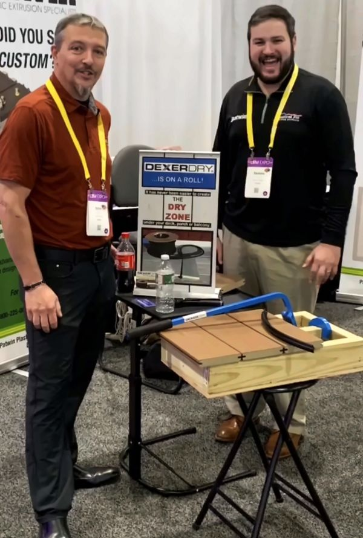

A quick hello
Thanks for stopping by. If you are here, you probably have a deck, or a deck you want to build, and a space underneath that could be so much more than a wet patch of pavers. That is exactly the problem we started this company to solve.
We are not a faceless brand. AmeriDex boards are made in Linden, New Jersey, and the people who answer your call and review your quote request work out of Brick, New Jersey. Ask us anything. We would rather help you get the right deck than sell you the wrong one.
From the jobsite to a patented system
AmeriDex started on a jobsite. John Ardolina, a carpenter by trade, spent years building decks and watching the same problem repeat itself. Every storm, water ran through the gaps in the deck boards and soaked the joists below. The framing slowly rotted, the fasteners slowly corroded, and the customer never saw any of it until the deck was already failing. The fix needed to happen at the surface, not underneath. That is the engineering insight that became Dexerdry, the patented above-joist water-diverting seal that sits between every deck board.
AmeriDex is the next step. It pairs that seal with a purpose-built cellular PVC deck board so the entire system, board and seal, ships and installs as one assembly. Two companies, one engineered system, one warranty.
The seal: Dexerdry, Inc.
John founded Dexerdry, Inc. in 2014 to commercialize the seal he had been developing on the jobsite. Dexerdry uses an above-joist water-diverting gasket made of automotive-grade TPE (thermoplastic elastomer), the same material category used in car door and window seals. Dexerdry, Inc. holds U.S. Patent 7,028,437 for the above-joist, integrated deck-gutter system. The seal ships on a roll, sits between every deck board, and locks the watertight layer at the deck surface itself, before water can ever reach the framing below.
The board and the brand: A & M Building Products and AmeriDex
A & M Building Products was founded in 2023 to bring the seal and a purpose-built deck board to market under one brand. That brand is AmeriDex. The boards are premium cellular PVC with a proprietary ASA cap, manufactured in Linden, New Jersey, and they are profiled to lock mechanically onto the Dexerdry seal as the deck is built. The headquarters and warehouse operations are based at 1129A Industrial Parkway in Brick, New Jersey.
The result is a single integrated deck system that ships as one product, installs as one trade, and is warranted as one assembly. There is no separate drainage manufacturer, no field-applied sealant, no second trade hanging trays underneath, and no split warranty.
Meet the team
AmeriDex is run by people with deep roots in decks, framing, and building products.

John Ardolina, Co-Founder
John is a carpenter by trade. He spent years on jobsites watching deck framing get soaked on every storm and built Dexerdry, Inc. in 2014 to solve it. Dexerdry holds the patent on the above-joist water-diverting seal that gives the AmeriDex deck its dry-framing performance. John brings the seal IP, the material science work behind the TPE gasket, and more than a decade of operating history at Dexerdry, Inc. into AmeriDex.
Jim Murphy, Co-Founder and VP of Business Development
Jim leads the manufacturing side of the business and brings extensive experience in cellular PVC and building products production. He runs the AmeriDex deck board plant in Linden, New Jersey, where the boards are extruded, capped, profiled to mate with the Dexerdry seal, and packaged for dealers and builders.
Our team in Brick, New Jersey
Our headquarters, sales, and warehouse team work out of 1129A Industrial Parkway in Brick. They answer the phone at 1-800-217-9206 (Mon-Fri, 8am-5pm ET), reply to sales@ameridex.com, and review every quote request.
Our promise when you reach out
- A real person reads it. Quote requests are reviewed by an AmeriDex specialist, not a call center, and you hear back by email within 1-2 business days.
- No pressure. There is no obligation and no deposit to ask for a quote.
- Your info stays with us. We do not share it, and we do not call unless you ask.
- Free samples. Pick your colors and we ship deck board samples to your door at no cost.
- A local connection. When you are ready, we route you to your closest authorized AmeriDex dealer or builder.
Made in the USA
Every AmeriDex deck board is manufactured in Linden, New Jersey. The Dexerdry seal that ships between every board is also produced in the USA. Headquarters, sales, and warehousing operate out of Brick, New Jersey. The system is engineered, manufactured, and supported entirely on-shore.
Built as the deck surface, warranted as one system
AmeriDex is installed as the deck surface, so it suits new decks and qualifying re-decks where the old boards are removed. The Dexerdry seal has to be installed between every board as the deck is built, so the system cannot be added beneath boards that stay in place. That constraint is what unlocks the rest of the value: dry framing for the life of the structure, a single-trade install on conventional 16 inches on-center joists, and a 25-Year Residential Limited / 10-Year Limited Commercial warranty on the integrated board and seal system.
Where to take it next
- See how the AmeriDex system works in technical detail, including the cross-section, install sequence, and FAQ.
- Read the above-joist deck drainage explainer for the engineering reasoning behind keeping the water at the surface.
- Request free samples to see all seven cellular PVC colors in person.
- Submit a project for a free quote if you are specifying AmeriDex on a new deck.
- Contact the team directly for commercial, multifamily, or dealer inquiries.